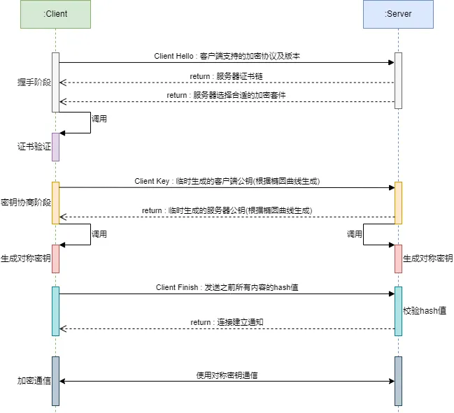
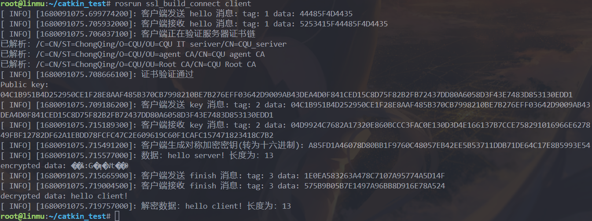

ROS OpenSSL SSL连接建立
ROS-OpenSSL-SSL-Connection-Build
重庆大学国家卓越工程师学院-智能汽车软件-智能网联汽车信息安全-实验
✨✨✨实验环境✨✨✨：
Windows 10 Linux
Subsystem
BRANCH: vb_release
RELEASE: Ubuntu 20.04.3
LTS
KERNEL: Linux 5.10.16.3-microsoft-standard-WSL2
openssl
版本：OpenSSL 1.1.1f 31 Mar 2020
✨✨✨实验准备✨✨✨：
创建三级证书链。
ROS
OpenSSL X509 证书链构建及自定义验证
SSL 建立连接
SSL 建立连接的过程可以大致分为：
- 握手阶段：确定加密套件，进行身份验证。
- 密钥协商阶段：协商确定后续通信使用的对称密钥。
- 校验阶段：根据之前通信内容生成hash。
这里大致的流程图如下：

图中密钥协商使用的是 ECDHE 密钥协商算法，后续实验也是使用这个算法。
详细的知识点说明许多文章已经写地非常详尽，这里就直接给出几个个博客，本文就不再赘述了。
相关参考资料：
SSL协议原理详解_ssl原理_曹世宏的博客的博客-CSDN博客
TLS/SSL 协议详解 (30)
SSL中的RSA、DHE、ECDHE、ECDH流程与区别_ssl
dh和rsa区别_Mrpre的博客-CSDN博客
密钥协商算法的演变 —— RSA算法 - DH算法 -
DHE算法 - ECDHE算法_故里有长安丶丶的博客-CSDN博客
ROS 服务介绍
服务是ROS中的一种通信方法。它与话题通信的区别是，服务允许客户端（Client）发送请求（request）到服务端（Server）并等候服务端的响应（response）。因此，服务机制是一种双向的同步通信机制，且实现一对多的通信。
在使用时，需要首先启动
Master节点，然后运行 Server 节点，最后开启 Client 节点。
这里在
Server 中需要编写回调函数用于处理 Client 的请求。Client
内要组装请求信息，并通过 Client 的 call 方法发起请求。这里的 call
方法是阻塞的，所以在后续代码中可以直接使用 请求的返回信息。
代码
GitHub -
LinMu-z/ROS-OpenSSL-SSL-Build-Connect
Gitee
- 林木/ROS-OpenSSL-SSL-Build-Connect >
注意本实验中实现的SSL连接建立过程为简化，没有加上
hash计算。读者可自行学习后补充。
核心代码讲解
在 OpenSSL 中对于 ECDHE 算法的实现主要通过 EC_KEY
及其相关类，这里将其相关流程抽象为工具类 KeyAgree
如下：
每一次创建连接都需要创建一次密钥对，这里创建的过程放在了，里面主要包含获取公私钥的方法，其中公钥是需要传输的给对方的。
其中有两个私有方法，为公钥的数据类型转换函数。
1
2
3
4
5
6
7
8
9
10
11
12
13
14
15
16
17
18
19
20
21
22
23
24
25
26
27
28#pragma once
#include <iostream>
#include <string>
#include <vector>
#include <openssl/ec.h>
#include <openssl/ecdh.h>
#include <openssl/obj_mac.h>
using namespace std;
class KeyAgree {
private:
EC_KEY* ec_key;
const EC_GROUP* group;
EC_POINT* key_other;
// ec_point 转为 string
EC_POINT* ec_point_from_string(const string& str);
// string 转为 ec_point
string ec_point_to_string(const EC_POINT* point);
public:
KeyAgree();
~KeyAgree();
const BIGNUM* getPrivateKey();
string getPublicKey();
void setOtherKey(string keyStr);
string getShareKey();
};
在构造函数内，首先设定了 ECDHE 算法使用的椭圆曲线，然后生成密钥对。
1
2
3
4
5
6
7
8
9
10
11
12
13
14
15KeyAgree::KeyAgree() {
// 指定曲线
ec_key = EC_KEY_new_by_curve_name(NID_X9_62_prime256v1);
if (!ec_key) {
cerr << "Failed to create EC key." << endl;
return;
}
// 生成密钥对
if (EC_KEY_generate_key(ec_key) != 1) {
cerr << "Failed to generate EC key." << endl;
return;
}
// 获取密钥组
group = EC_KEY_get0_group(ec_key);
}
在获取公钥函数中，首先通过 EC_KEY_get0_public_key
方法从密钥对中提取公钥，这里看到 公钥的数据类型为
EC_POINT，为了便于传输我们这里将其串行化。同时为了提高log的可读性，我们将其转化为十六进制。
1
2
3
4
5
6
7
8
9
10string KeyAgree::getPublicKey() {
// 获取私钥
const EC_POINT* key = EC_KEY_get0_public_key(ec_key);
cout << "Public key:" << endl;
// 密钥转为字符串
string str = ec_point_to_string(key);
cout << string_to_hex(str) << endl;
return str;
}
生成对称密钥首先需要设置密钥的长度，然后提前创建号密钥的缓冲区，这里使用vector来保存。然后通过输入对方的对等公钥和自身的密钥对。
最后将其转化为字符串返回。
1
2
3
4
5
6
7
8
9
10
11
12
13
14string KeyAgree::getShareKey() {
// 设置对称密钥长度
size_t shared_key_len = 32;
// 用于保存对称密钥
vector<unsigned char> shared_key(shared_key_len);
// 生成对称密钥 (密钥缓存区，密钥长度，对等公钥，本地密钥对)
if (ECDH_compute_key(shared_key.data(), shared_key.size(), key_other, ec_key, NULL) != shared_key_len) {
cerr << "Failed to compute shared key." << endl;
return "";
}
// 转为字符串
string str(shared_key.begin(), shared_key.end());
return str;
}
实验结果


分析：
首先由客户端向服务器发送了 hello
消息，里面包含了证书套件，然后服务器返回消息中确定了证书套件并附上了证书链。
之后客户端对证书进行验证，并验证成功。
客户端生成了对等公钥发送给了服务器，服务器接收到之后马上同样生成了公钥并传给客户端。两者都根据对方的对等公钥及自身的密钥对生成了对称密钥。可以看到双方的对称公钥生成是相同的。
然后客户端 拟定了一条 finish 消息，里面包含了 "hello server!"
，并通过对称公钥使用 AES
对消息内容进行加密，然后传输给了服务器。服务器接收到之后回复了 "hello
client!" 同样使用了 AES 进行加密。